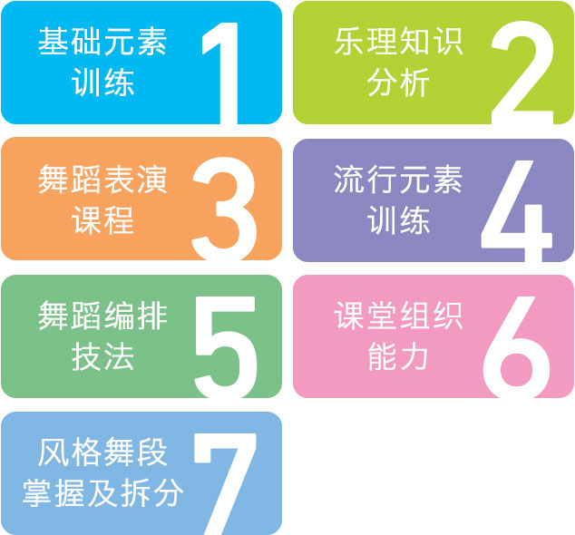

系统规范专业化的课程
以培养未来爵士舞教练为目标
你会是我最骄傲的学生吗？
你是否也想成为拔尖的舞者呢？
大部分想成为舞蹈老师的学员
都存在以下几个通病
如果你没有或者克服了
恭喜你
通过教练班的系统课程后
你将会成为一个合格的老师
But你得知道，你是否正在误区徘徊
学员常犯误区
1、偏科：还没开始学，还没学过的舞蹈，就会说，我是跳什么舞蹈，我不喜欢XX舞蹈。偏科实际是一个演员对自己的局限性，我从不认为说出：“我是跳XX舞”“我跳过XX舞”类似这样的话自豪，我认为，一个舞者，应该是跳什么是什么，演什么像什么。舞种的多方面学习，是为了培养学生成为全面的人才，社会的趋势正在综合性发展，单一的人才根本无法适应社会需求。即便是单一性人才，也是需要接触更全面的知识来给自己提供本身素材应用的。
2、莫名的自信：她几乎不会听完你说的话，说个大概就认为懂了，不注意细节，所以无论跳什么舞，都是自己本身自信所带来的感觉，说白了，就是跳什么都是一个样，等到过些时日，她就会苦恼问你，为什么自己无法进步，这个时候再从头开始，但是，这个画满了图案的纸，要比当初的白纸难雕塑多了。
3、应用：中国的教育永远是填鸭式的教学，学生学习文化的习惯也带到了舞蹈课程上，大部分学生都只会模仿，并不懂创造，大部分人都会在学习一段时间后，有模有样的跳上几支成品舞，但是当说到即兴发挥或者随机应变时，简直不可直视，这就是只学，但不用的结果，学的差不多了，忘的也差不多了。
名额有限，请提前报名
A班：10个名额
B班：10个名额
开课时间
A班：6月13日-8月18日 ；B班：7月4日-9月9日
（请根据自己的时间选择，AB班课程一样，两个月）
课程设置
1、基础课程：为期一个月，身体柔韧性及力量的训练爵士舞元素训练，针对性的训练组合；
2、专业课程：为期一个月，表演舞蹈，乐理知识、音乐的分析，舞蹈的拆分及教学，舞蹈课堂的组织，舞蹈编排技法；
3、上课时间：A班 2016年6月13日下午1点
B班 2016年7月4日下午1点
周一至周五，上午10：00-11:30，下午13:00-16:00
周六、周日，课堂观摩、助教实践，或自由休息。
课程大纲
这个课程能学到什么？
1、爵士舞知识，爵士舞文化起源、各类风格的起源，各类风格与身体各部位的关联，爵士舞相关的专业术语；
2、身体柔韧性及力量的训练方法，通过学习，可以使人体的各个关节、韧带、肌肉得到锻炼，从而拥有良好的综合身体素质；
3、爵士舞元素，包括头、颈、肩、胸、腰、胯、膝、脚等部位的单一及组合元素，通过学习，掌握最基本的节奏、技巧、协调性。
4、乐理知识、音乐的分析（音乐风格、内涵、旋律、节奏分解）；
5、舞蹈表演，形体的表现力、表情、情绪等表演相关知识；
6、舞蹈的拆分及教学，学习将教学的舞蹈拆分成单一动作进行教学；
7、舞蹈编排技法，舞蹈编排的动作、空间、时间运用；
8、舞蹈课堂的组织与教学步骤，学习制定教学目标、课堂时间分配、每个教学环节的步骤。
课程大纲
风格定位：
流行爵士（混合风格）课程时间：
3天上课1天考试课程内容：
一、热身组合
组合1：基础体能热身（激发活力、活动关节）5分钟
组合2：基础韧带热身（撑拉韧带、活动筋骨）5分钟
二、元素组合
组合1：头颈+肩的组合
组合2：胸腔+波浪+跨部的组合
组合3：律动+步伐+转的组合
组合4：手臂的控制与力量训练组合
提示：以上每个训练组合约1分钟左右12-18个8拍）
三、流行元素组合（3个）
提示：以上每个组合由4个8拍组成（选用
最新潮流元素动作提炼连接）
四、风格舞段（3段）
提示：以上每个舞段约1分半左右（选用三种音乐风格，动作难度适中：可考虑HIPHOP、NOW JAZZ、LA等曲风）
五、理论知识
1、常见的爵士舞风格介绍与混合风格的特点与优势
2、教学流程与教学步骤的实施
3、作品创编概念与实践训练
六、课程安排
每节课1小时，每天6节课，共18节课